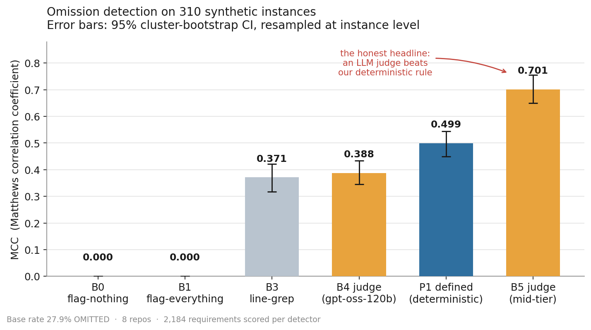
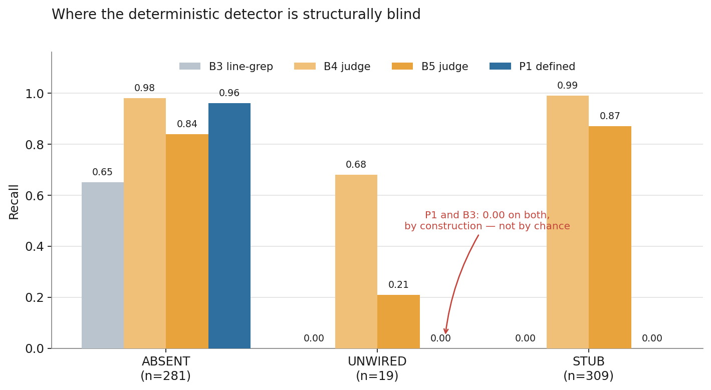
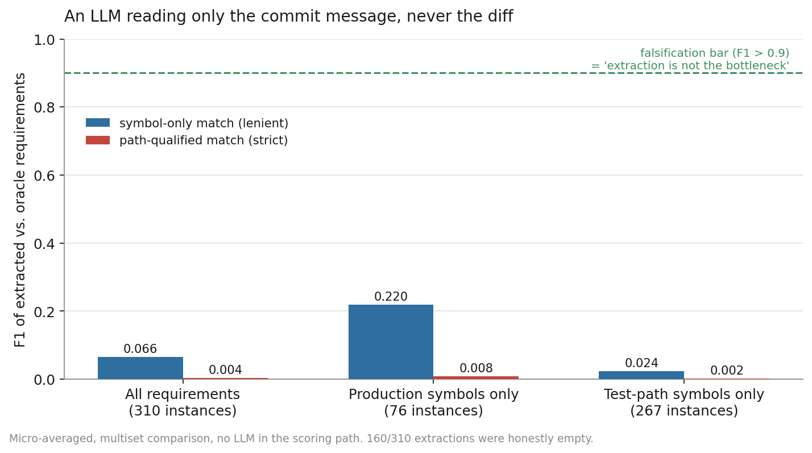
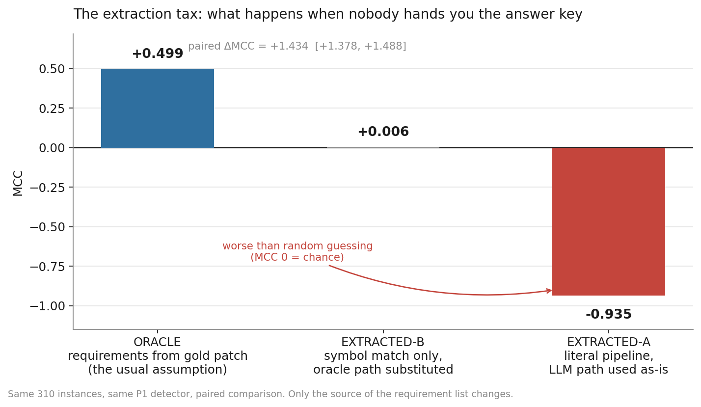

The detector that lost
I built a benchmark for silent omissions in AI-agent code patches. My deterministic detector lost to an LLM judge, and removing one convenient assumption drove it below random. Both numbers are the headline.
What the measurements said
Paired MCC difference between my deterministic detector and a mid-tier LLM judge. The judge wins.
95% CI [−0.252, −0.150], excludes zero
Detector MCC once requirements are extracted from issue text instead of the gold patch. Worse than random.
Oracle condition: +0.499
False positive rate — the one axis where the deterministic rule decisively beat the judge, and the entire basis for shipping it.
Judge FPR 0.113
p95 latency per instance for the shipped CI gate, against a 10-second acceptance bar.
Verified live on GitHub Actions
An AI coding agent opens a pull request. The description says it implemented three things. The diff implements two.
Nothing crashes. Tests pass, because the missing piece had no test. A reviewer skims a clean-looking diff, reads a confident summary, and merges. The omission surfaces three weeks later as a bug report nobody traces back to that PR.
This is the dominant failure class in agentic coding, and the literature has converged on it from several directions. SWE-Compass, clustering 600 error traces per model, found requirement misinterpretation (30–34%) and incomplete solutions with side effects (29–42%) together accounting for over 60% of failures, while technical knowledge gaps sat at 5–8%. The bottleneck is not that models cannot code. It is that they do not finish what was asked.
The most uncomfortable result comes from the false-success literature: in one study, 75.8% of self-assessing coding-agent trajectories that made explicit completion claims were false successes — and no LLM judge configuration tested exceeded AUROC 0.65 at catching it.
That number is what started this project. If agents fail silently, and the obvious fix — ask another model — barely beats a weighted coin, then the question worth asking is whether a boring deterministic rule does better.
It doesn't. Not overall. That turned out to be the most useful thing I learned.
What the benchmark contains
310 synthetic instances derived from merged commits across eight mature Python repositories: attrs, click, flask, httpx, itsdangerous, jinja, requests, werkzeug. 13,104 records, 2,184 requirements scored per detector, base rate 27.9% omitted.
Requirements are derived from the gold patch by AST diffing, producing a flat list of (path, symbol) pairs. A mutation then removes one requirement from the patch in one of three ways.
| Class | What the mutation does | n |
|---|---|---|
| ABSENT | The symbol is never defined at all | 281 |
| UNWIRED | The symbol is defined but never called from anywhere | 19 |
| STUB | The symbol is defined with an empty or trivial body | 309 |
The taxonomy is not arbitrary. Published taxonomies of unimplemented requirements split along the same lines — missing component or feature at 32.4%, incomplete implementation at 18.1%. ABSENT is the missing component. STUB is the incomplete implementation. UNWIRED is the sneakiest of the three: the code exists, the symbol resolves, imports succeed, and nothing ever invokes it.
The protocol, which mattered more than the code
Six rules were frozen before a single number was measured. In hindsight these are the actual contribution — the detector is two hundred lines of AST walking. The protocol is what makes its numbers mean anything.
The detector never sees the gold patch
This is SWE-bench's most-cited weakness. Independent audits found roughly 32.67% of successful patches involved solution leakage, with a further 31.08% passing on inadequate tests. Around 94% of instances predate major knowledge cutoffs, making memorization indistinguishable from reasoning. I enforce it with runtime canary tests that fail loudly if diff content ever reaches a detector's input.
Measure once, never tune afterwards
If the bar is not cleared, write the null result. Do not adjust the corpus, the threshold, or the prompt to improve the number. Easy to write down and genuinely uncomfortable to follow.
MCC is the headline metric, not F1
At a 27.9% base rate, F1 flatters classifiers that spray positives. Chicco and Jurman are unambiguous that accuracy and F1 produce inflated, misleading scores on imbalanced data, while MCC only scores high when a classifier performs across all four confusion-matrix cells. Concretely: the flag-everything baseline achieves F1 = 0.44, which would look respectable in a table. Its MCC is 0.000, which is the truth.
Cluster bootstrap intervals at instance level
Requirements inside one instance share a repository, a commit, and a specification. They are not independent draws. Naive row-level resampling would treat 2,184 correlated requirements as 2,184 independent observations and produce intervals far tighter than the evidence supports.
Paired comparisons, not overlapping intervals
Two independent confidence intervals overlapping does not establish that two detectors are indistinguishable. Every head-to-head claim here is a paired difference computed on identical instances.
The pilot snapshot is frozen
A week-two results file, never edited, with every later claim expressed as a delta from it. At project close I verified through git history that exactly one commit has ever touched that file, and it predates all the work being audited.
Finding 01The result that didn't flatter me

| Detector | P | R | F1 | MCC | MCC 95% CI | FPR |
|---|---|---|---|---|---|---|
| B0 flag-nothing | 0.00 | 0.00 | 0.00 | 0.000 | [0.000, 0.000] | 0.000 |
| B1 flag-everything | 0.28 | 1.00 | 0.44 | 0.000 | [0.000, 0.000] | 1.000 |
| B3 line-grep | 0.75 | 0.30 | 0.43 | 0.371 | [0.317, 0.421] | 0.039 |
| B4 LLM judge | 0.40 | 0.97 | 0.56 | 0.388 | [0.345, 0.434] | 0.569 |
| P1 defined | 0.80 | 0.44 | 0.57 | 0.499 | [0.449, 0.545] | 0.043 |
| B5 LLM judge | 0.74 | 0.84 | 0.79 | 0.701 | [0.650, 0.756] | 0.113 |
Paired cluster bootstrap of MCC differences: P1 beats line-grep by +0.128 [+0.103, +0.156] and beats the reasoning judge by +0.111 [+0.055, +0.164]. It loses to the mid-tier judge by −0.202 [−0.252, −0.150].
The interval excludes zero. This is not noise. The deterministic wedge I set out to demonstrate does not exist at the overall level.
That result sits in the first screen of the repository README, not in a limitations appendix. Burying it would have been trivial: report F1 only, where 0.57 against 0.79 reads as a smaller gap. Or report independent intervals and note that they overlap somewhat. Or quietly drop the judge for being a paid dependency. Rule two exists to stop exactly that.
What the deterministic rule does win is false positive rate: 0.043 against 0.113. That matters enormously for deployment and becomes the whole basis of the shipping decision. But it is a different claim from "the deterministic approach is better," and conflating the two would have been dishonest.
Finding 02Blind by construction, not by accident

The detector reaches 0.96 recall on ABSENT and exactly 0.00 on both UNWIRED and STUB. This is not a tuning failure. It asks one question — is this symbol defined in this file — and a stubbed function is still defined. An unwired function is still defined. The rule answers its question correctly and the question is insufficient for two of three classes.
Publishing the per-class breakdown rather than the aggregate is the difference between a benchmark and a marketing number. Anyone deploying this needs to know that a clean report means no symbols are entirely missing, not that nothing was omitted. That constraint later became a mandatory disclaimer inside the shipped tool's own output.
Finding 03Two detectors I built, measured, and deleted
I also built P2 (defined and reachable) and P3 (defined, reachable, with a non-trivial body), expecting them to close the UNWIRED and STUB blind spots. They did fix recall — P3 reached 0.9868.
They also carried false positive rates of 0.83 and 0.84. MCC came out at 0.0868 and 0.2013. Neither beat the naive string-matching baseline.
The pre-agreed criterion was: beat grep, or be deleted with a written reason. I attempted the fix first, a public-API exemption to suppress false positives, measured it, and found it narrowed the gap without closing it. Both detectors were then removed from the registry with before-and-after numbers and full reasoning recorded.
Deleting two thirds of your novel contributions because they lost to grep is not enjoyable. It is what the protocol required, and it makes every surviving claim more credible.
Finding 04The real-world corpus that couldn't answer the question
Synthetic mutations are a controlled instrument, not the world. So I collected eight real agent trajectories from live repositories — tqdm, bandit, marshmallow, mkdocs — with hand-labelled requirements.
Every one was a clean success. Zero of sixteen requirements were omitted. A degenerate positive class: recall is undefined when the thing you are detecting never occurs in your sample.
What I could measure was false-positive behaviour on real code, and it transferred. Real-corpus FPR came out at 0.062 against the synthetic 0.043 — a genuine external-validity signal that the detector does not start hallucinating omissions once it leaves the synthetic distribution.
But the honest framing is that this arm failed to answer its primary question, and the assumptions document says so. Eight instances with zero positives is not a validation. It is a pilot that tells you what to collect more of.
Finding 05The extraction tax
This is the finding that matters, and it came from asking an uncomfortable question about my own benchmark.
Every number above depends on a hidden assumption: the requirement list is derived from the gold patch. The detector never sees that patch — the leakage guards enforce it — but the requirements it checks against were computed from it. That is a perfect-extraction oracle, which makes every result an upper bound.
In deployment nobody hands you the gold patch. You get an issue and a commit message, and you have to work out what was supposed to be built from text alone.
So I built an extractor that reads only the issue and commit text, never the diff, enforced by its own leakage guard, and emits a structured list of symbols and paths. Then I scored it against the oracle requirements and re-ran detection on its output.
Two decisions were locked before any measurement. Matching is purely structural — exact, case-sensitive multiset comparison with no model anywhere in the scoring path, because using an LLM to judge LLM-extracted text reintroduces precisely the noise this experiment exists to isolate. And two strictness levels are always reported together: symbol-only, which asks whether the model named the right function, and path-qualified, which also asks whether it knew the file.
I added a falsification condition the original task specification lacked: if extraction F1 came out above 0.9, the finding would be that extraction is not the bottleneck and the tax is small. That is a legitimate result. Writing it down beforehand meant I could not retroactively decide what counted as interesting.

The output was not degenerate. 150 of 310 extractions were non-empty, there were no parse failures, and spot checks showed real inference rather than word-copying. Given a vague commit message the model correctly returned nothing. Given a message that named a symbol explicitly, it got the name right and the file wrong. Only two path-qualified hits occurred in the entire corpus, both on commit messages that literally spelled out a file path.
This is consistent with two decades of requirements-traceability research, which reports that fully automated trace recovery falls short of the accuracy needed for unsupervised use. Recent LLM-based traceability work lands at 60–70% recall and positions itself explicitly as decision support under human oversight rather than automation.

| Condition | P | R | F1 | MCC |
|---|---|---|---|---|
| Oracle — requirements from gold patch | 0.802 | 0.445 | 0.572 | +0.499 |
| Symbol match only, oracle path substituted | 0.923 | 0.020 | 0.039 | +0.006 |
| Literal pipeline, extracted path used as-is | 0.046 | 0.062 | 0.053 | −0.935 |
Paired difference between oracle and the literal pipeline: +1.434 [+1.378, +1.488].
Under literal deployment MCC goes negative — worse than flagging at random. The detector is path-qualified by design, so a wrong or missing path forces near-universal false omission verdicts: 791 false positives against 38 true ones.
The middle condition decomposes the failure. Once paths are corrected for symbol-matched items, precision recovers fully to 0.923 — when the model names the right symbol, the detector's verdict is trustworthy. But recall collapses to 0.020. The tax is dominated by the extractor rarely naming the right symbol at all, then catastrophically compounded by path errors under literal deployment.
The engineering conclusion is that requirement extraction, not omission detection, is the hard problem. A detector operating on free-text-derived requirements is not merely degraded. It is actively harmful. Total cost of establishing that: $0.057.
The bug that would have been p-hacking if I'd stayed quiet
The middle condition's first implementation produced MCC −0.898. I inspected it and found the bug: non-matching items were still being scored with their broken paths, meaning that condition was dominated by the same path noise it existed to isolate. Corrected to include only items naming a real oracle symbol, it became +0.006.
A fix that moves your number from −0.898 to +0.006 is exactly the shape of a p-hack. So the honest question is whether the fix was justified independently of the result.
Three things, including the uncomfortable one
The fix restores the specification rather than inventing one. That condition was defined before any code ran as symbol-identification only, with oracle paths substituted for symbol-matched items. Scoring non-matching items under it was always outside that definition.
The headline number never moved. The literal-pipeline row is byte-identical across the buggy run, the fixed run, and an independent verification run. The fix touched only the diagnostic.
But the trigger for finding the bug was the bad number, not a pre-registered check. I did not catch it by review. I caught it because −0.898 looked wrong. That ordering is worth stating plainly rather than dressing up.
All three points are recorded permanently alongside both numbers, the full diff, and the honest order of operations. Anyone auditing this can see the −0.898 and judge for themselves.
This is the most transferable practice in the project: when a fix moves a number in the direction you wanted, publish the sequence, not just the justification. Reviewers can evaluate a justification. Only you know the sequence, so only you can disclose it.
Finding 06Shipping a gate that discloses its own uncertainty
The final phase packaged the detector as a GitHub Action that comments on pull requests.
Why the better detector doesn't ship
The mid-tier judge has the higher MCC, 0.701 against 0.499. It does not ship, for two reasons.
It fails the bar it would be held to. The gate's acceptance criterion is precision at or above 0.80. The judge's precision is 0.74. Shipping it would mean overriding my own threshold because I preferred a different metric.
And a paid API call per pull request is an operational liability. This is not theoretical. The AI code review market has converged on false-positive control as the make-or-break variable, and practitioners state the reason bluntly: the cost of one false positive is seconds of attention, while the cost of a thousand is a team that has learned to scroll past every comment your tool posts. Independent head-to-head comparisons show the spread — roughly two false positives per run for the lowest-noise reviewer against about eleven for the highest-recall one, with the high-recall tool catching nearly double the bugs. That trade has a wrong side for a merge-blocking gate.
The deterministic rule's 0.043 false positive rate — the one axis where it decisively won — is exactly the property a gate needs. It is also offline, reproducible, and free per run.
Requirements come from a checklist, never free text
This is Finding 05 applied directly. The gate parses requirements from a structured markdown checklist in the pull request body. It does not attempt free-text extraction, because I measured that pipeline at −0.935 and it would ship a tool that is worse than useless.
That is a product decision made from a negative result. The measurement did not merely document a limitation. It eliminated a design I would otherwise have built.
The gate publishes its own confidence interval
Offline precision against the acceptance bar
Point estimate 0.8018, clearing the bar by 0.0018. The 95% interval [0.723, 0.885] straddles it on both sides. A margin this thin is a margin you should expect to renegotiate.
Hiding that would be indefensible, so the posted comment carries three things: which checklist symbol is missing from the diff, the structural blindness disclaimer, and the precision caveat with its interval. A test asserts the caveat is computed live from the frozen baseline rather than hardcoded, by swapping the baseline fixture and checking the rendered numbers change.
The gate has its own falsification condition too. If a future run drops precision below threshold, it suspends itself and flags the regression rather than silently continuing to post.
Verified live, not only in pytest
A throwaway pull request with a deliberately missing symbol. The workflow fired in eight seconds and posted a comment byte-identical to the renderer's expected output, with a precision value computed live from the frozen baseline. Measured latency: 12.0ms median, 26.5ms at p95, against a ten-second bar. 132 of 132 tests passing.
What's still open
- UNWIRED remains underpowered at n=19 against a target of 100. Documented as directional rather than conclusive. It does not block the gate, whose criterion is overall precision, but it is not resolved.
- The extraction tax is measured only on synthetic data. With eight real instances and zero positives, the real corpus could not support the same analysis. Whether the tax is larger or smaller on genuine issue text is unknown.
- The precision margin is thin and its interval straddles the threshold. A modest corpus change could flip it. The gate is designed to suspend itself if that happens.
- The gate has been verified, not adopted. One live demonstration on my own repository proves the mechanism works. It is not evidence of value in a real team's workflow, and I am not going to claim otherwise.
What I'd tell someone starting something similar
Write the falsification condition before the code. Every task here had one except the final packaging task, and that was the only one where I found myself uncertain what would count as failure. The correlation is not a coincidence.
Pick the headline metric before seeing any numbers. Choosing MCC was not clever, it was pre-committed. Had I chosen afterwards, an F1 of 0.44 for a baseline that flags everything would have made a much more comfortable table.
Match your interval structure to your data's dependence structure. Getting this wrong does not produce a wrong point estimate. It produces intervals that lie, which is worse, because it is invisible.
Build the ablation that could destroy your result. Finding 05 exists because I asked what my own benchmark assumed. It returned the most negative number in the project and the most useful one. If you cannot think of an assumption whose removal would hurt, you have not looked hard enough.
A tool that hides its own error bars will be trusted exactly once. For anything that posts into a developer's workflow, uncertainty belongs in the output, not the appendix.
References
- Chicco, D. & Jurman, G. (2020). The advantages of the Matthews correlation coefficient over F1 score and accuracy in binary classification evaluation. BMC Genomics 21:6.
- Aleithan, R. et al. (2024). SWE-Bench+: enhanced coding benchmark for LLMs — solution leakage and weak-test analysis. arXiv:2410.06992
- SWE-Compass: towards unified evaluation of agentic coding abilities. arXiv:2511.05459 — trajectory failure-mode distribution.
- Benchmarking and studying the LLM-based agent system in end-to-end software development. arXiv:2511.04064 — taxonomy of unimplemented requirements.
- From confident closing to silent failure: characterizing false success in LLM agents. arXiv:2606.09863
- Bias in the loop: auditing LLM-as-a-judge for software engineering. arXiv:2604.16790
- Reliability without validity: a systematic evaluation of LLM-as-a-judge models. arXiv:2606.19544
- TraceLLM: leveraging large language models for enhanced requirements traceability. arXiv:2602.01253
- Sourcegraph (2026). AI code review in 2026: how it works and how to adopt it.
- Field, A. & Welsh, A. (2007); Harden, J. (2011) — cluster bootstrap methods for clustered data.